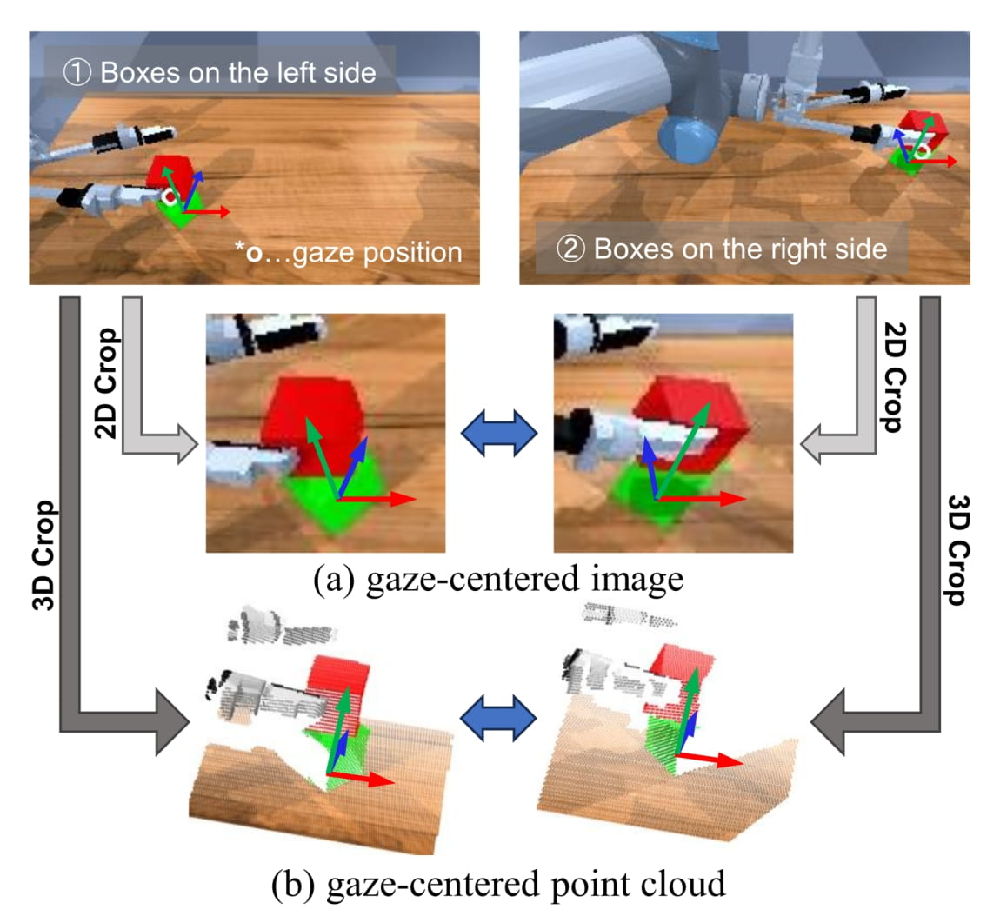
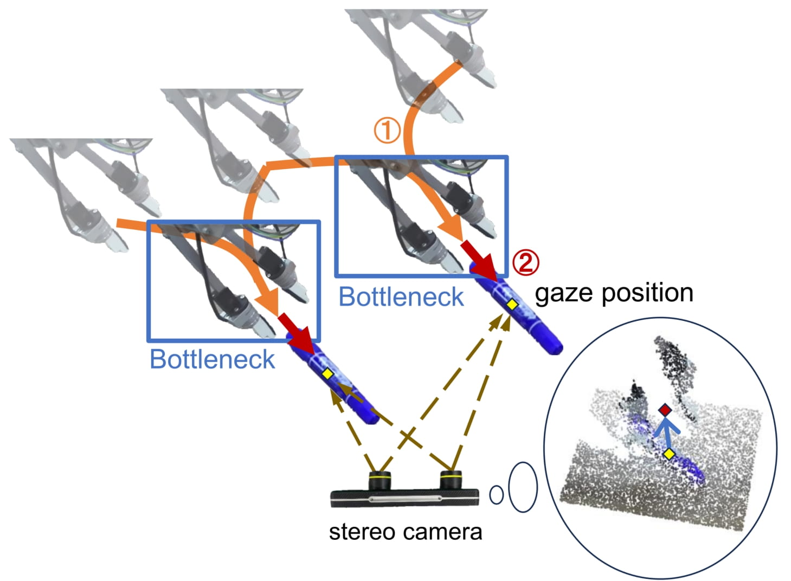
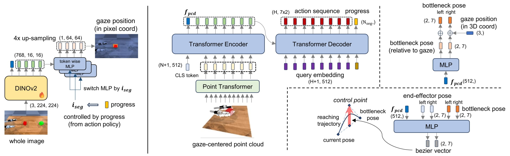
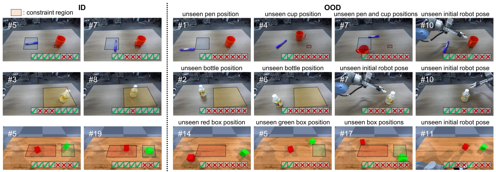
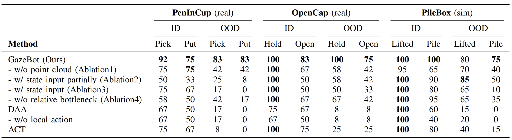

Autonomous agents capable of diverse object manipulations should be able to acquire a wide range of manipulation skills with high reusability. Although advances in deep learning have made it increasingly feasible to replicate the dexterity of human teleoperation in robots, generalizing these acquired skills to previously unseen scenarios remains a significant challenge. In this study, we propose a novel algorithm, Gaze-based Bottleneck-aware Robot Manipulation (GazeBot), which enables high reusability of the learned motions even when the object positions and end-effector poses differ from those in the provided demonstrations. By leveraging gaze information and motion bottlenecks—both crucial features for object manipulation—GazeBot achieves high generalization performance compared with state-of-the-art imitation learning methods, without sacrificing its dexterity and reactivity. Furthermore, the training process of GazeBot is entirely data-driven once a demonstration dataset with gaze data is provided.





@article{Takizawa2025,
title={Enhancing Reusability of Learned Skills for Robot Manipulation via Gaze and Bottleneck},
author={Ryo Takizawa and Izumi Karino and Koki Nakagawa and Yoshiyuki Ohmura and Yasuo Kuniyoshi},
journal={ArXiv},
year={2025},
volume={2502.18121},
}